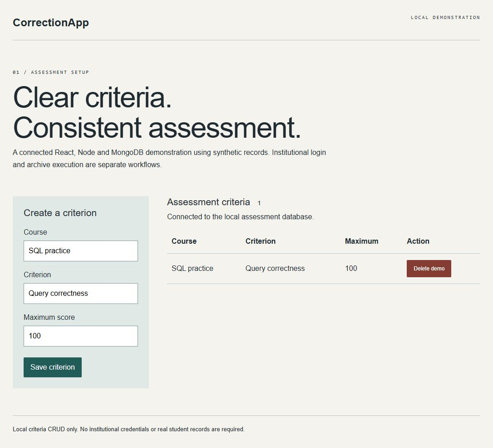
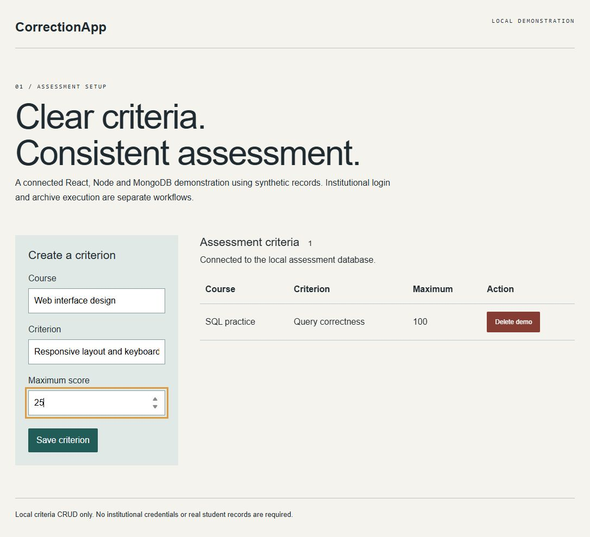
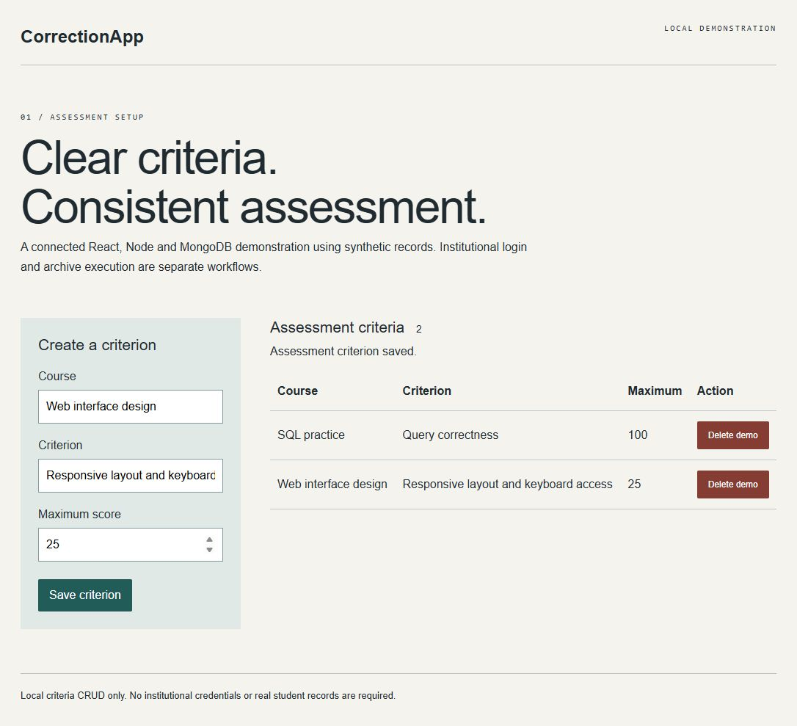

REACT / NODE / MONGODB
CorrectionApp.
Course correction criteria and score workflows.
The idea
An assessment helper for defining course criteria and maximum scores. The React interface connects to a Node API and MongoDB, keeping grading setup in one place.
What I built
Course correction criteria and score workflows.
React production demo build and synthetic MongoDB criteria create/read/delete passed. The demo interface saves and deletes criteria; legacy file-execution endpoints are disabled by default. Institutional authentication and complete correction workflows remain unverified.
Explore the features


